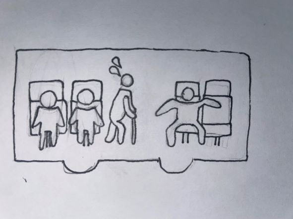
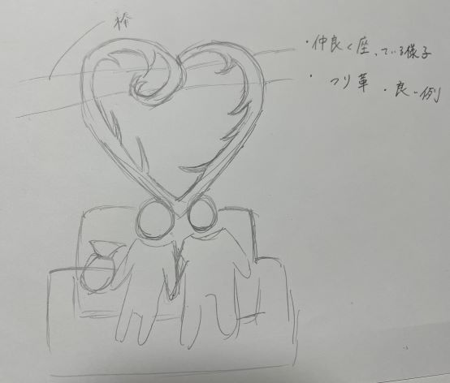
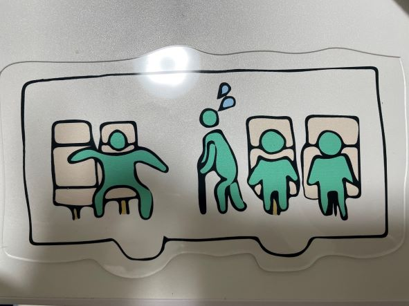

design for others-2
design for others-2
design for others-2
構想スケッチ

初めは3Dプリンターを使って、つり革のように
引っ掛けておけるマナー向上を勧めるものを作ろうと考えた。
しかし、正面からだと座っているように見えない、
バスの乗車マナーを守ろうという思いが伝わりにくいという理由からデザインを変えました。

完成品

作品の説明
バスに乗っているときに二人席を一人で使っている人を
あらわしたピクトグラムを作りました。
バス内の壁に貼って使います。
イラストレーター
使用機材
3Dカッター
UVプリンター